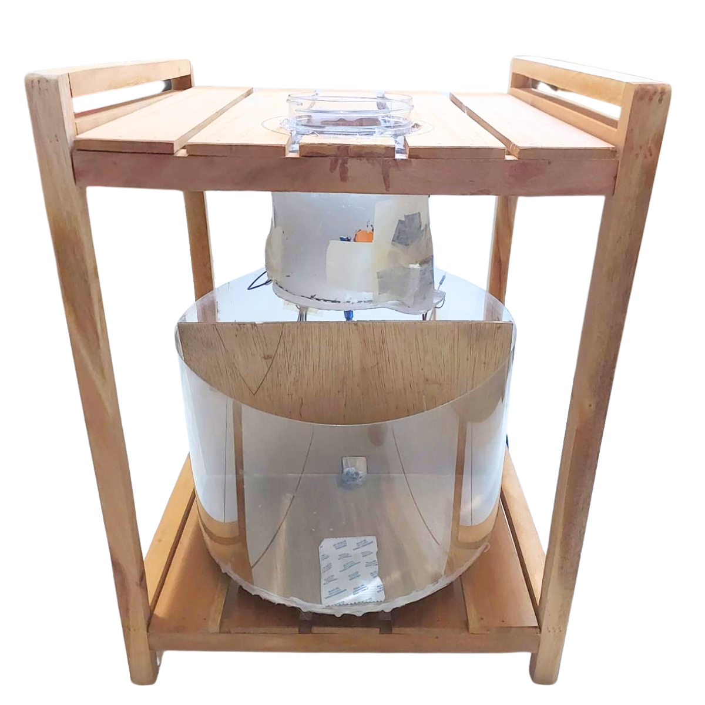

TEMPAT PEMILAH SAMPAH OTOMATIS
TEMPAT PEMILAH SAMPAH OTOMATIS
ARDUINO
Mengambil langkah awal untuk mengubah Bumi menjadi tempat yang lebih bersih, hijau, dan nyaman dengan tempat pemilah sampah berbasis arduino.
TINGKAT AKURASI DAN PRESISI YANG TINGGI
Select new ornamental plants for home decoration and obtain an atmosphere of harmony and freshness.

Presisi

Recall
THE BEST PLANTS

Gymnocalycium
Cactus
$15

Echeveria
Succulent
$10

Ferocactus
Cactus
$15

Key Lime Pie
Succulent
$10

Melocactus
Cactus
$15
TAHAP-TAHAP
PEMBUATAN

-
Siapkan struktur tempat sampah dengan rak kayu dan toples plastik bekas sebagai tempat input sampah.
-
Pasang sensor raindrop di tengah penutup tempat sampah untuk mendeteksi kelembapan sampah.
-
Pasang sensor inductive proximity dan capacitive proximity di sisi toples untuk mendeteksi sampah logam dan nonlogam.
-
Tempatkan sensor ultrasonik di sekitar input sampah untuk mendeteksi keberadaan sampah.
-
Pasang DC Servo Motor SG90 di sisi toples dan hubungkan dengan penutup impraboard agar bisa membuka otomatis.
-
Tempelkan Arduino Uno R3 di bagian dinding dan sambungkan semua sensor serta aktuator melalui breadboard.
-
Pasang baterai 18650 Li-Ion di pojok dinding sebagai sumber daya utama sistem.
-
Tempatkan motor stepper 28BYJ-48 di bagian bawah dan hubungkan dengan ULN2003 Driver untuk menggerakkan wadah pemilah sampah.
-
Siapkan wadah utama dari kayu dan plastik mika yang dibagi menjadi dua bagian untuk sampah organik dan anorganik.
-
Program Arduino dan uji coba sistem dengan memasukkan berbagai jenis sampah untuk memastikan semuanya berfungsi dengan baik.
TIDAK PERLU BAYAR,
INI CODINGNYA 🍄
PENJELASAN
Kode ini digunakan untuk mendeteksi dan memilah sampah secara otomatis menggunakan Arduino.
Sensor ultrasonik mendeteksi keberadaan sampah,
lalu sensor induktif, kapasitif dan sensor raindrop menentukan apakah sampah itu logam,
organik, atau anorganik.
Setelah jenis sampah diketahui, sistem menggerakkan motor stepper & servo
untuk membuang sampah ke tempat yang sesuai. Sampah basah dikategorikan sebagai organik,
sedangkan logam dan bahan nonlogam kering masuk ke kategori anorganik.
Fungsi throwTrash() menggerakkan motor untuk membuang sampah, sedangkan laporan() mencetak hasil deteksi ke serial monitor. Dengan ini, tempat sampah bisa memilah sampah secara otomatis.